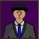

Somos una unidad especial de investigación digital. Nuestro trabajo consiste en resolver misterios escondidos entre líneas de código, pistas ocultas en imágenes y archivos olvidados.
Este juego fue creado por un equipo de desarrolladores, apasionados por el género noir. Nuestro objetivo es ponerte en los zapatos de un detective, en un mundo lleno de secretos y conspiraciones y tu objetivo es encontrar al culpable antes de que cometa otro crimen.
Aquí presentamos a nuestro equipo de trabajo y lo que hizo cada uno dentro de este proyecto:
- Fabian Sandoval: Cabecilla de grupo
- Ernesto Peñaloza: Diseñador de base de datos
- Kenner Paredes: Diseñador de página web
- Martina Ortiz: Documentadora
- Karla Donoso: Diseñadora de página web